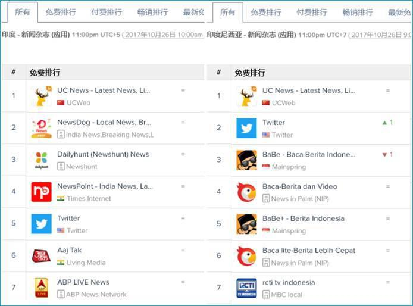
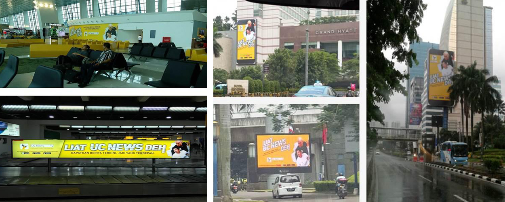
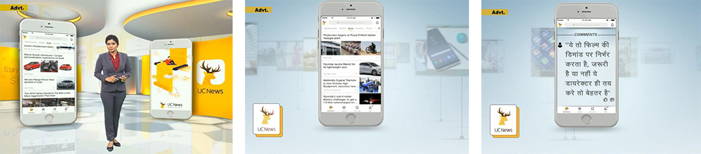

“户外广告+电视植入” UC News在双印又打赢一场攻坚战
2018.06.10
说到移动互联网创新，“头条模式”是极具代表性的。风靡中国以后，“头条模式”迅速地被复制到了世界各地，其中落地最为成功的，当属阿里旗下的UC News。其背后原因，除了UC技术、资源的有力支撑以及中国成熟产品的降维打法优势外，其品牌在双印的落地，中国品牌出海服务商正点国际传媒ZETIN功不可没。
进入双印市场的头条类资讯产品，UC News并不是第一家，但它完美的诠释了什么叫做“后来者也能居上”。2016年5月，处在出海转型升级的UC陆续在印度、印尼发布了UC头条的海外版UC News，宣布从工具到内容平台的战略升级，占领印度57%市场份额的UC浏览器，也同步升级为内容平台，整合UC News的个性化资讯推荐功能，致力于打造双印的第一内容分发平台。
2017年年初，当你走在印尼雅加达机场与印度CBD街头时，一片片橙黄色的巨型广告就会展现在你的眼前，这是正点国际传媒ZETIN为UC News量身打造的本地化品牌广告。
根据UC News的目标受众，印尼、印度客流量最大的雅加达国际机场、巴厘岛国际机场、德里机场、孟买机场、班加罗尔机场，以及办公楼、学校区域、商业区等人流密集区，充分保证客流量。运用形象、语句、三维物件、动感、音效、周围环境和高新科技，零距离锁定受众群体，刺激目标受众的感官，实现UC News在人群中的首次印象。
根据印度内容消费数据盘点显示，随着印度移动用户的高速增长，用户对手机资讯新闻的需求也在逐渐增长，印度UGC线上内容发展具有庞大潜力，未来将是数字内容与传统媒体共同PK来争夺用户时间。
在此背景下，提供数字内容的新闻APP想要登上传统电视新闻台内容做直播，被看作是不可能的事。而正点国际打破了双方历史沉淀的敌对默契，让UC News登上了《ZEE NEWS》等印度当地占有率最高的主流印地语电视新闻栏目，首次将新闻资讯类产品在印度本地电视台进行内容植入。
利用“传统本地广告+线下互动营销”的方式，UC News成功掀起印度国民的新闻互动热潮，成功树立起“印度国民级新闻资讯平台”的品牌形象，成为双印地区用户规模最大的个性化新闻资讯产品。
随着智能手机的出货量增长以及3G/4G网络的普及，双印地区对移动内容消费的需求日渐增长。本次与正点国际ZETIN的合作，开辟了中国新闻资讯类产品品牌出海新通道，无疑是落地双印本地化的一次经典整合营销案例。